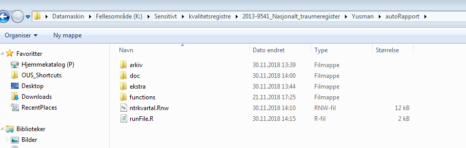
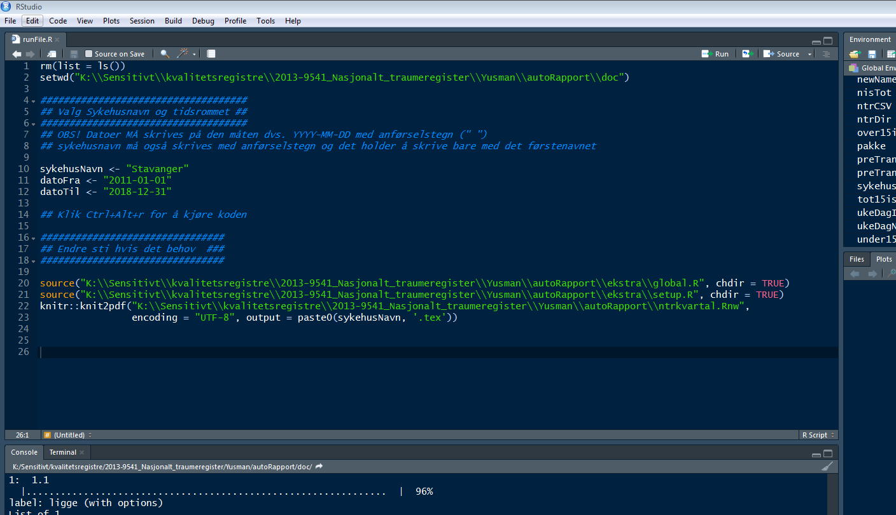
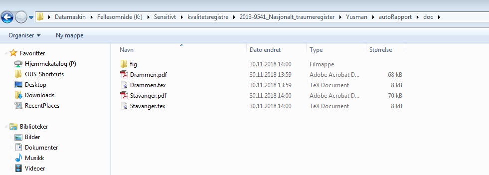

Rapport kompilator via RStudio
Noen ganger kan det være et problem å generere rapport via Shinyapps. Hvis du har det problemmet kan det være aktuelt å kompilere rapport via RStudio. Her finner man veiledning for å gjøre det:
Sti til mappen
Mappen ligger i K sensitivt området og heter autoRapport. Inne denne mappen ligger en fil som heter runFile.R. Denne filen som skal brukes til å kompilere rapporten. Bildet nedenfor viser hvor mappen ligger.

Generere rapport
Starter RStudio program og finner fram mappen autoRapport ved bruk av menyen som heter File og deretter Open File. Når du har funnet rapportmappen, valg filen runFile.R og deretter klikk Open.
Det er 3 variabler som du kan endre. De er:
- sykehusNavn: Valg sykehus til rapporten
- datoFra: Valg startdato for rapporten
- datoTil: Valg sluttdato for rapporten
Viktig at strukturen beholdes som det er dvs. bruk av anførselstegn og måten dato skal skrives "YYYY-MM-DD". Kjør koden ved å tykke Ctrl+Alt+r eller ved bruk menyen Code -> Run Region -> Run All. Se figuren nedenfor:

Hvor ligger rapporten?
Når koden er kjørt, ligger den ferdige rapporten i mappe som heter doc. I tillegg finner man figuren til ukedager for de sykehusene man genererte rapporten til i mappe som heter fig.
